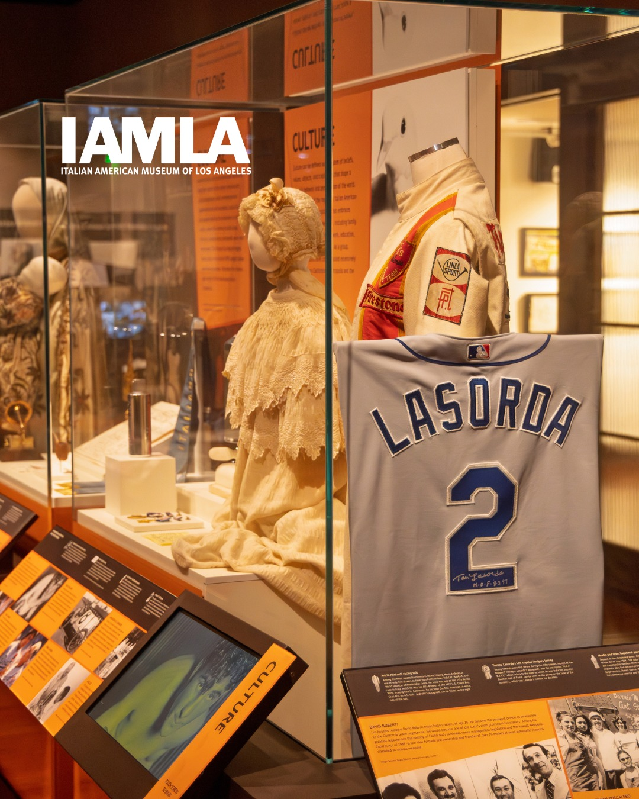
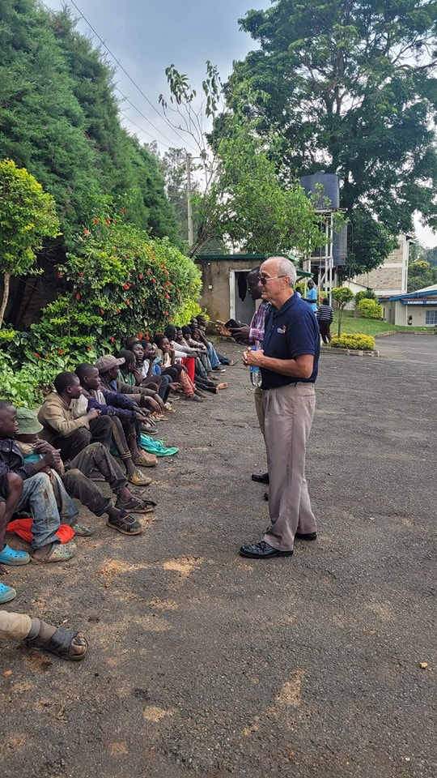

Board Oversight
The board reviews budgets, approves strategic initiatives, and documents decisions in minutes that can be shared upon request.


Four Corners Gallery operates under written bylaws with an independent volunteer board. Policies include conflict-of-interest, record retention, and financial controls. Because we collaborate with public partners, our 501(c)(3) status, EIN 001737914, office address 153 QUICKSAND POND RD., 153 QUICKSAND POND RD., RI 02837, and primary contact lines are visible across the site.
The board reviews budgets, approves strategic initiatives, and documents decisions in minutes that can be shared upon request.
Program scopes, eligibility, and partner roles are available to agencies for verification. We publish contacts for each site to reduce delays.

Restricted funds are tracked separately from general operations. Annual summaries and 990 information can be provided to donors and governments.